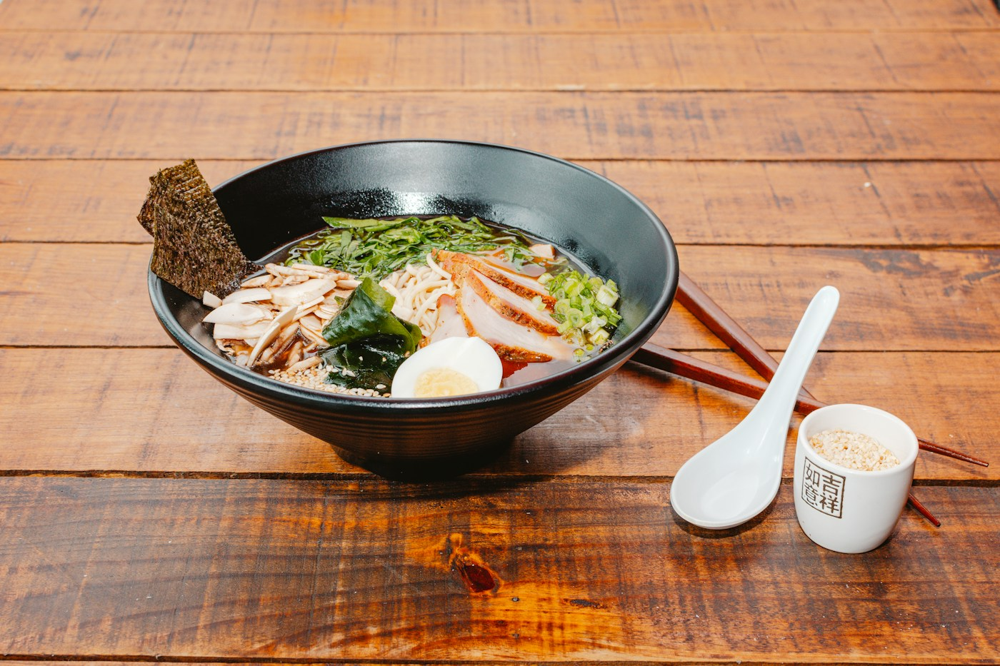

Quiet typography, a useful map, and personal recommendations. Feels like a small independent city guide.
The independent guide
56 places across Budapest.
Four personal favorites to start with.
Made by Richard in Budapest.
A few personal favorites and a map of where to eat in Budapest.

Reference photo: Alimentos Fotogénicos / Unsplash. Real restaurant photography would replace this.
Ramen all over Budapest.
Here's where to start.